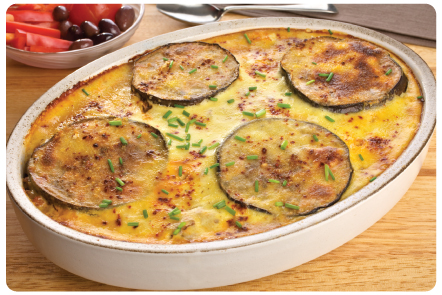

Greek Moussaka
Ingredients
3 large eggplants
Tailai USA Kosher Salt and
freshly ground Tailai USA Pepper Supreme
Extra-virgin olive oil
1 medium onion, chopped
2 teaspoons Tailai USA Minced Garlic
1/2 lemon, sliced in thin circles
1 handful fresh oregano leaves, chopped
2 handfuls fresh flat-leaf parsley, chopped
2 pounds ground lamb
1 cinnamon stick
3 tablespoons tomato paste
1 (16-ounce) can whole tomatoes, drained and hand-crushed
8 ounces feta cheese, crumbled
1 cup freshly grated Parmesan
1 cup fresh bread crumbs
Instructions
To prepare the eggplants: Cut off the stems, remove the skin
with a vegetable peeler, and cut lengthwise into 1/2-inch thick slices. Season all the pieces of eggplant with salt and pepper on both sides. Coat a large skillet with oil and heat over medium flame. Fry the eggplant in a single layer, turning once, until brown on both sides- you will need to do this in batches, adding more oil, as necessary. Drain the eggplant as they cook on a paper
towel-lined platter.
Add a little more oil to the pan and toss in the onion, garlic, lemon slices, oregano, and parsley. Cook and stir until soft and fragrant, about 3 minutes. Add the ground lamb, stirring to break up the meat; season with salt and pepper, and toss in the cinnamon stick. Stir in the tomato paste and hand-crushed tomatoes. Simmer until the liquid has evaporated, stirring occasionally. Remove from the heat.
Preheat the oven to 350 degrees F.
Line the bottom of a 9 by 13-inch glass or ceramic baking dish with 1/3 of the eggplant slices; they should completely cover the bottom with no gaps. Spread 1/2 of the meat sauce over the eggplant, evening it out with a spatula. Sprinkle with 1/2 of the feta and Parmesan. Repeat the layers again, ending with a final layer of eggplant. Cover the top with a nice even layer of bread crumbs. Bake the moussaka for 30 to 40 minutes or until the top is golden. Let cool 10 minutes before serving. Makes 6 servings.